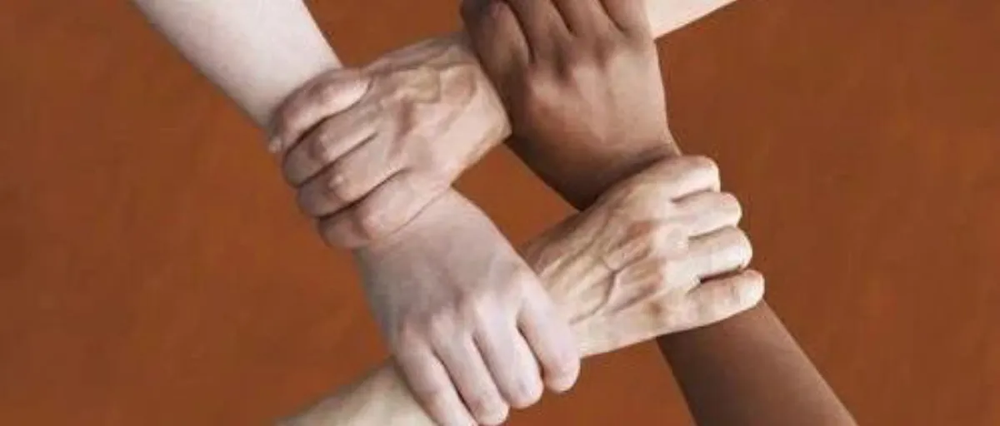
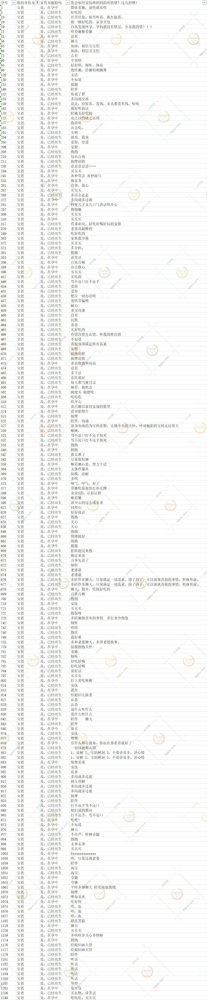

孖仔帮
公众号ID：twinsbang
关注
文|圆圈妈
网图|侵删
前几天，有一宝爸把我拖入了他的家庭群，说有事咨询；群里有准爸准妈，准爷爷奶奶外公外婆，都是为了迎接两位新成员的到来，自发形成的战略联盟育儿军团。
介么这阵容，这排场，还能有啥事咨询啊？我有股不详的预感，正寻思着要不要退群，宝爸说待会儿还会有刚物色好的月嫂保姆入群。
什么情况？还是撤吧！
我知道这位宝爸在担心什么，第一次做双胞胎的爸爸，没经验，急需人手，这就需要“有经验”的长辈来帮忙，比如双胞胎的爷爷奶奶外公外婆。
然而这只是理论上的想想而已，实际就是，养育双胞胎新生儿的一系列问题依然存在，矛盾也会加倍，往往就出现在这些“有经验”上。
老人带娃，是件“不可控”的事情，尤其是在新兴育儿方式的冲击下，老一辈儿的经验通常站不住脚。
倘若4个老人家与新手父母一起来带两个双胞胎，那场面将是一部大片，集合动作+恐怖+悬疑+家庭+魔幻+科幻+战争+剧情片的史诗般巨作...
我不禁打了个冷颤，想起5年前的自己...
想当年，我的双胞胎出生前，家里有公公婆婆小姑子严阵以待，按道理这个育儿阵营对我这个新手妈妈来说已经是皇恩浩荡了，可是却被我打了一手烂牌。
今天这篇来说说在育儿资源雄厚的情况下，如何打得一手好牌；双胞胎来临之际，各路人马如何各司其职，才不会自己人打自己人？
#准妈妈：做好两件事就Ok了
1，找点事做
如果可以，建议28周开始休产假，最迟不超过32周，我知道你是女强人，事业心重，但如果不想生娃时轰动整个写字楼，那还是早点在家歇着比较好。
在家歇着不代表闲着，如果不是绝对卧床，有基本的自理能力，那就找点事情做，具体做什么事情不重要，重要的是：有事情做，在认知上会让自己有存在感，有价值感，而不是一只待宰的“二师兄”。
这种“唯我独尊”的感觉实在太重要了，尤其适合与婆婆共处一室的你，你会有一种“我才是老大”的感觉。
能做的事情有很多，比如清点下待产包，特别是产检资料；落实好生产医院（最好是选建档产检的医院），与家人一起熟悉去医院的路线，设计好去医院的几种方案，精确到哪个路段哪个时间段不易塞车，准确说出家附近的标志建筑物...
如果以上都嫌麻烦，而且确定自己心小，胆小，那别犹豫了，操家伙，上医院去，住到生。
拒绝情绪垃圾
这里就不多劝了，孕激素这东西，个人认为，钱钱钱+买买买+吃吃吃，一般情况下是全国通用有效的，比苦口婆心的劝管用多了。
如果以上两个招儿都不起作用，那就看造化了。
值得一提的是，在你躲在幽暗阴冷的角落里找不到光亮时，外面正有一群人正试图把阳光照进去温暖你。最重要的是，肚里的两小宝贝也在以不同寻常的胎动模式，给你加油打气。
我的产前状况蛮惨的，除了睡不好觉，吃不下饭，情绪也很崩溃，经常偷偷在备忘录里写遗书，呆坐一会儿就流泪...我无法解释那种悲伤的心情，总感觉要天塌，世界末日那种。
队友有觉察到我的情况，发动了所有亲朋好友轮番给我打气，但无济于事，我就是不想交流，只想躺在病床上，眼神都是空荡荡的...最后的确是造化，自己想通的。
宇宙众生哀苦中，即将出生的双胞胎小宝宝就是那一星半点的可爱...都熬到这个份上，怎能在这个时候掉链子！？
此处想对忧郁中的孕妈咪说：世事千帆过，前方终会是温柔和月光；一切终将到来，也会终将过去！所有人都在等着你勇敢地重新出发。
所以，你没有任何理由忧郁。
#准爸爸，2个任务
钱，准备好！
这是大实话。
养双胞胎，没有钱，寸步难行！若是遇到超早产，费用会更高。
那到底要准备多少钱？
未知数！
无底洞！
工作上更加积极点吧，做好现金储备（我意思是不要放定期，不要放基金，不要放股票，需要钱时可以立马到账的那种）；做好要吃老本至少半年的心理准备，而这仅仅是个保守估计，每家养双胞胎的消费层次不一样，大概是要这么个数，反正多赚钱就对了。
圆圈出生不到三个月就花了10万＋，包含出生时住院和刚满月不久因肺炎再次入院的费用，他们还算给力，不算太早产，若是超级早产，估计30万+起步。
当然，也不必太灰心，船到前头自然直，有压力才有动力！要庆幸：还好所有问题，钱能解决，娃娃们健康平安出生就好。
李安在自传《十年一觉电影梦》一书中提到，生孩子会转运。更何况咱这是一对双儿，一定会翻倍转运的哈。
我们在经历半年的吃老本后，家庭经济状况开始复苏，渐渐有所好转。队友好像加足马力的战斗机（鸡），天天打鸡血似的在养娃和赚钱的道路上赴汤蹈火，勇往直前，于是才有了今天的我们，在深圳安家立足。
媳妇，安抚好！
如果说赚钱是抢篮板，那么安抚媳妇就是防守。
孕妈妈的情绪会时常处于易激惹的状态，不知道是不是因为双胞胎的缘故，这种负能量可能会加倍，上不封顶。
准爸爸们不要觉得这是作。
你想象下肚子里塞了一个大浴缸，里面有两只宝宝在游泳，那是什么体验！？
不一样的媳妇，不一样的安抚方式。
基本上通用的招式如下：打不还手，骂不还口，逆来顺受，独家闺蜜，妇女之友，必要时可以开展各种不计后果的山盟海誓，糖衣爆弹，反正先哄住再说。
如果实在没主意，没经验，这里有几位前辈爸爸的绝招，仅供参考，数据来源于申请爸爸群时的真心话大冒险。
如打开图片模糊，可公号输入“双胞胎爸爸不是搅屎棍”获取清晰版本▲
如果这都不奏效，可以考虑安排心里医生介入。
家中长辈，假装冇眼睇
此处对长辈的建议，不敢当！谈不上指导，只是一个作为晚辈的真实心声，同时也是我一直很想对曾经离乡背井过来照顾我的公公婆婆想说的话。
在两宝贝出生之前，基本上需要做的事情不是很多，主要是煮一日三餐，如果家里有保姆，那就更省事，保持沉默，照常作息生活。
说到饭菜，这真是老大难的问题，本身孕妇的口味特别奇怪，厨神煮出来的美食也可能是渣渣一坨。
若家有比较挑剔的孕妇，那就看开点，不必太较真，尽量迎合她的口味，也不需要问喜欢吃啥，怎么做，可以在平时多留意下她的喜好即可。
如果已经尽力了，依然被嫌弃了，那就“呵呵吧”“么么哒”，甭担心会因此饿着您的宝贝孙，娃儿们的妈会比您更紧张。
另外，面对准妈妈的坏情绪，您可能不大理解，特别是为人婆婆，可能会觉得儿子被媳妇呼来唤去很看不惯，对儿媳的心生不满，要替儿子打抱不平。
实际上呢？您多虑了，那只是小两口的相处方式，一个愿打一个愿挨，他们两口子好着呢。
此时最佳方式是沉默，见怪不怪，你有自己的净土，他们秀他们的恩爱。
如果小两口不需要任何帮助，那也罢，保持一碗汤的距离，静候开奖。
漫漫孕期，终于熬到临产，我认为，没有什么比马上开奖，马上见到两个小宝贝更激动人心。那些不愉快，那些小疙瘩，那些隔夜梗...根本不值得挂齿，完全可以一笑而过。
双胞胎出生后，将会是另外一拨骚操作，请听下回分解。
-END-
今日互动话题
#你会让老人家帮忙带双胞胎吗？#
评论区聊一聊呗！
微信公众号：孖仔帮
ID : twinsbang
专注双胞胎孕育，养育，教育经验分享
扫码关注我们
点一下你会更好看耶

